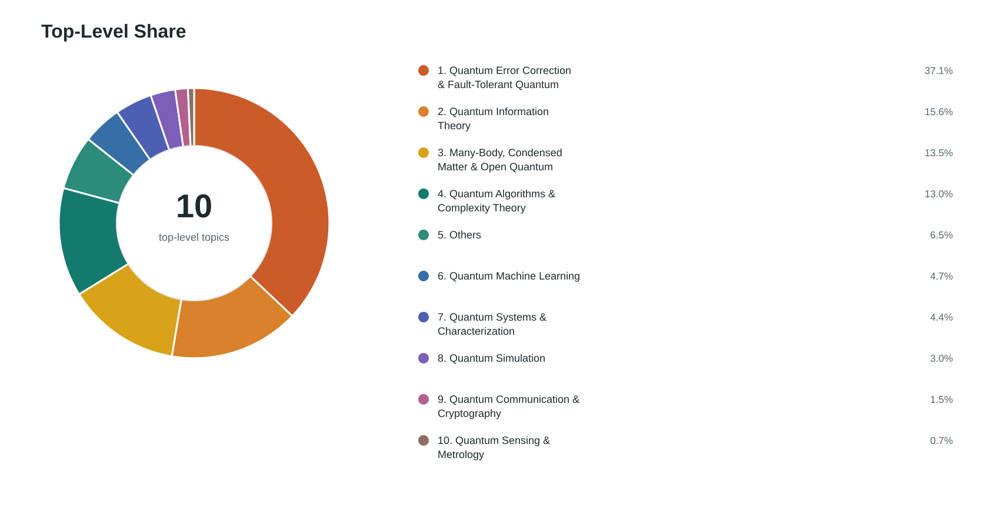
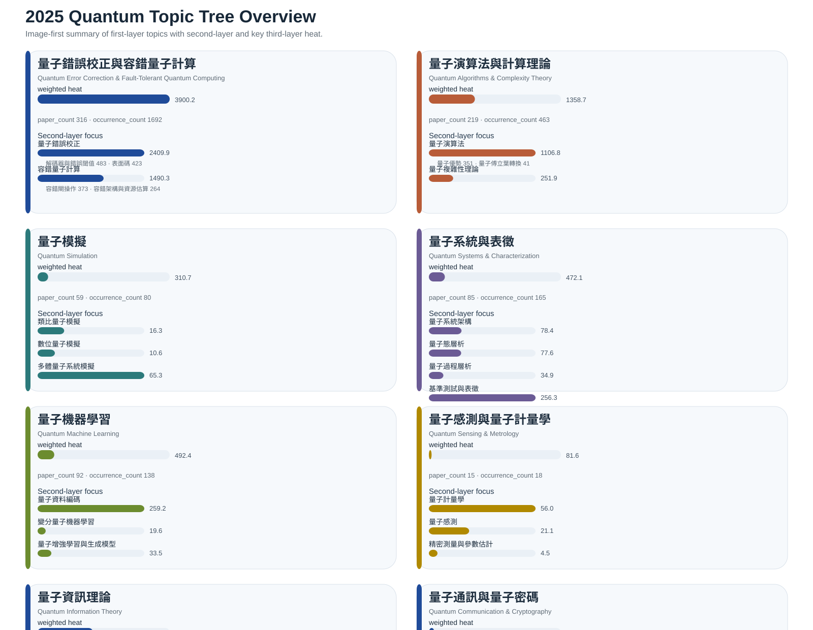
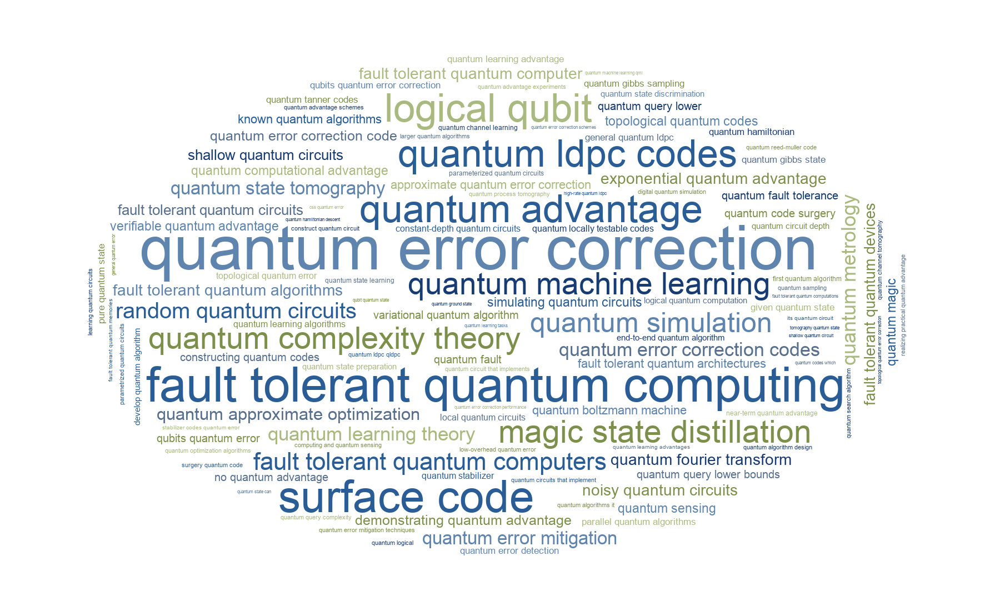

This article reorganizes the original dashboard into a website-style narrative article. The dataset is based on SciRate quant-ph papers published in 2025, filtered to papers with scite ≥ 30, and then grouped into topic layers to estimate both topical coverage and weighted heat.
Dataset Snapshot
Key Takeaways
- Quantum Error Correction & Fault-Tolerant Quantum Computing is the dominant area by a large margin, with 316 papers and the highest weighted heat.
- Quantum Information Theory and Many-Body / Condensed Matter / Open Quantum Systems remain major pillars, indicating strong breadth beyond hardware-centric narratives.
- Quantum Algorithms & Complexity Theory is broad in paper count, but its internal heat is concentrated in quantum advantage and algorithmic foundations.
- Quantum Machine Learning is active, but still substantially smaller than QEC, information theory, and many-body directions in this high-attention subset.
- The researcher ranking is driven by repeated presence in high-attention papers rather than by a single blockbuster result.
Top-Level Topic Heat
| Rank | Topic | Papers | Occurrences | Heat |
|---|---|---|---|---|
| 1 | Quantum Error Correction & Fault-Tolerant Quantum Computing | 316 | 1692 | 3900.22 |
| 2 | Quantum Information Theory | 180 | 811 | 1637.58 |
| 3 | Many-Body, Condensed Matter & Open Quantum Systems | 133 | 534 | 1423.46 |
| 4 | Quantum Algorithms & Complexity Theory | 221 | 469 | 1368.55 |
| 5 | Others | 138 | 45 | 683.76 |
| 6 | Quantum Machine Learning | 92 | 138 | 492.44 |
| 7 | Quantum Systems & Characterization | 85 | 165 | 466.16 |
| 8 | Quantum Simulation | 59 | 80 | 310.67 |
| 9 | Quantum Communication & Cryptography | 18 | 67 | 159.55 |
| 10 | Quantum Sensing & Metrology | 15 | 18 | 76.91 |
Topic Share Overview

Where the Heat Is Concentrated
1) QEC & Fault Tolerance
This area clearly dominates the map. Within it, Quantum Error Correction and Fault-Tolerant Quantum Computing are both large, with especially strong visibility for decoding, thresholds, surface codes, logical qubits, quantum LDPC codes, and fault-tolerant gates.
2) Quantum Information Theory
The most visible sub-areas are Entanglement & Resource Theory, Quantum States & Discrimination, and Quantum Channels & Capacities, showing that foundational theory remains a major pillar of the field.
3) Algorithms & Complexity
This cluster is broad but internally uneven. The strongest signal comes from Quantum Advantage, while other algorithmic areas such as QAOA and variational algorithms contribute less heat in this filtered set.
Secondary but Still Active Areas
4) Many-Body / Condensed Matter / Open Systems
This cluster is substantial, especially in many-body and condensed matter topics, with open-system and thermodynamics work forming a significant secondary layer.
5) Quantum Machine Learning
QML appears meaningfully, but not at the same scale as QEC or information theory. The largest internal theme is Quantum Data Encoding, with smaller contributions from generative models and variational QML.
6) Systems & Characterization
Benchmarking, tomography, architecture, and calibration form a coherent applied cluster, reflecting the continued importance of device characterization and experimental validation.
Topic Tree Overview

High-Heat Keywords
| Rank | Keyword | Papers | Occurrences | Heat |
|---|---|---|---|---|
| 1 | quantum error correction | 273 | 1205 | 2409.90 |
| 2 | fault tolerant quantum computing | 194 | 487 | 1490.31 |
| 3 | quantum machine learning | 92 | 138 | 492.44 |
| 4 | surface code | 83 | 167 | 422.89 |
| 5 | quantum advantage | 69 | 121 | 351.32 |
| 6 | logical qubit | 63 | 109 | 321.57 |
| 7 | quantum simulation | 59 | 80 | 310.67 |
| 8 | quantum ldpc codes | 53 | 139 | 273.61 |
| 9 | quantum complexity theory | 52 | 76 | 261.75 |
| 10 | magic state distillation | 35 | 63 | 181.78 |
Keyword Word Cloud

Top Researchers in the Hot-Paper Set
The ranking below follows the original report logic: total paper-level scite counts across coauthored hot papers, with tie-breakers from paper count, weighted heat, and author name.
| Rank | Author | Papers | Total Scite | Weighted Heat |
|---|---|---|---|---|
| 1 | Jens Eisert | 27 | 2148 | 141.59 |
| 2 | Hsin-Yuan Huang | 13 | 1786 | 76.02 |
| 3 | John Preskill | 10 | 1258 | 56.92 |
| 4 | Ryan Babbush | 11 | 1135 | 60.70 |
| 5 | Michael J. Gullans | 13 | 1041 | 68.54 |
| 6 | Mikhail D. Lukin | 13 | 1029 | 69.17 |
| 7 | Zoë Holmes | 10 | 1006 | 54.53 |
| 8 | John Wright | 9 | 1003 | 50.15 |
| 9 | David Hayes | 10 | 937 | 53.65 |
| 10 | Craig Gidney | 7 | 887 | 39.62 |
Interpretation
The 2025 hot-paper landscape is not evenly distributed. The strongest concentration is clearly around error correction, fault tolerance, and scalable architectures, indicating that the field is investing heavily in the path from theoretical possibility to robust implementation.
At the same time, quantum information theory, many-body physics, and algorithmic complexity remain foundational. This suggests that the field’s center of gravity is not purely engineering-driven; instead, it is a layered ecosystem where foundational theory, physical modeling, and practical fault tolerance all reinforce one another.
Meanwhile, quantum machine learning is active but still secondary in this high-attention slice. In other words, QML is part of the conversation, but not yet the main engine of the field when one looks specifically at highly visible 2025 papers.